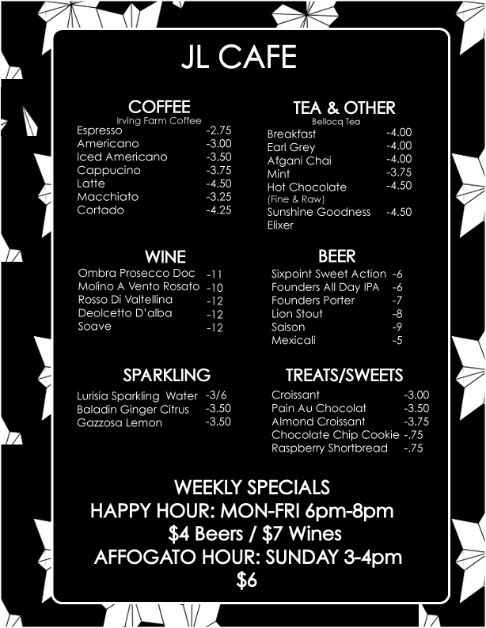

Jill Lindsey is at once a clothing boutique, a wellness center, an event space, and a cafe and lounge on Myrtle Avenue in Fort Greene.
The store has a diverse range of products for sale by Jill Lindsey, local designers and artisans throughout the world. The store carries womens apparel, men's apparel, jewelry, shoes, textiles, beauty products, candles, perfumes, home decor and more.
We serve Irving Farm Coffee, Bellocq Teas, and pasteries and cookies from Ceci-Cela (based in Nolita).
We have a wide sampling of prosecco, wine, and craft beer.
Be sure to stop by for Happy Hour, Monday-Sunday 6PM - 8PM. All beers are $4 and all wines are $7.
We host a wide range of workshops and events that aim to bring the community together and promote self-enrichment. There are art classes, wine tastings, supper clubs, kid's sing alongs, tarot card readings etc. Check out our current events calender to see what's happening in the store this month!
We offer facials, brow shaping and tinting, full-body massage, reiki and other wellness services.
We love to open our doors for individuals to throw their own event. Whether it be a birthday party, bridal shower, holiday party, etc., we would love to host your celebration. We have our store, the downstairs space and backyard to offer. Our catering menu and event space rental can be viewed below. We encourage you to call 347.987.4538 to check for available dates and additional information.
370 Myrtle Avenue, Brooklyn, NY 11205
347.987.4538
M-F 11:00-10:00, S/S 9:00-10:00
hello@jilllindsey.com